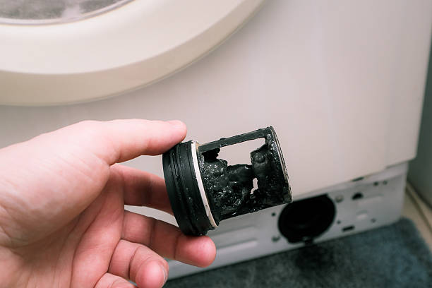
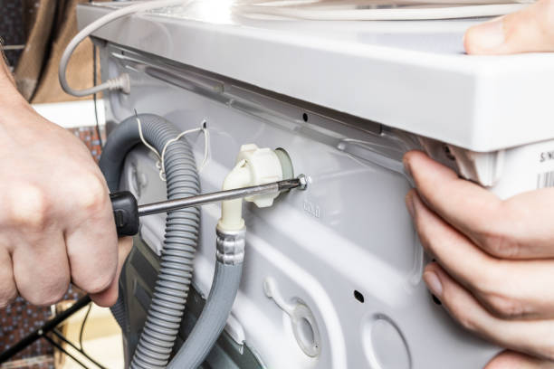

Dallas service
Local washing machine repair in Dallas.Fast diagnosis. Clean in-home service.
We help with the washing machine problems homeowners see most often, including spin failure, drain problems, leaks, no-start issues, shaking, and error-code issues.
Fast response
Clear communication and efficient diagnosis.
In-home service
Convenient repair without changing your routine.
Clean workmanship
Straightforward estimates and tidy service.
Popular service calls
Common washer problems we handle locally
If you are not sure which service page matches your issue, these are the most common calls we handle for local homeowners.

Washing machine not spinning
Wet clothes, weak spin, or a washer that stops before the spin cycle finishes.
Washing machine not draining
Standing water, slow draining, pump trouble, or repeated drain errors.
Washing machine won't start
No response, dead controls, or a start button that does nothing.
Leaking washing machine
Squealing, thumping, grinding, or scraping during the cycle.
How it works
A simple local process from booking to repair
We keep the service experience straightforward so you know what to expect before, during, and after the visit.
1. Tell us the symptom
No spin, no drain, leak, no start, shaking, or error code.
2. We diagnose on site
We inspect the washing machine and confirm the real cause.
3. You get a clear estimate
We explain the repair before moving forward.
4. We verify the result
We confirm the washer is working properly again.
Need help choosing a service?
Tell us what the washer is doing and we will guide you to the right next step.
Why local matters
What homeowners want from a local washing machine repair team
Fast scheduling
You want help soon, not after days of waiting around.
Clear communication
You should understand the problem, estimate, and next step.
Respectful in-home service
Tidy work and professional handling make the experience easier.
Correct diagnosis
The right fix starts with understanding the actual failure.
Practical repair advice
You should know whether repair makes sense before moving forward.
Verified results
We confirm that the washing machine works correctly before the visit ends.
FAQ
Quick answers about local service
Yes. If the washing machine has multiple symptoms, we can inspect the whole situation and explain what is connected and what is separate.
That is normal. Just describe what the washing machine is doing and we will guide you to the right next step.
Yes. After diagnosis, we explain the issue, the repair approach, and the estimate before moving forward.
Tell us the main symptom, any leaks or noises, and whether the washer stops early or leaves water behind. That helps us prepare for the visit.